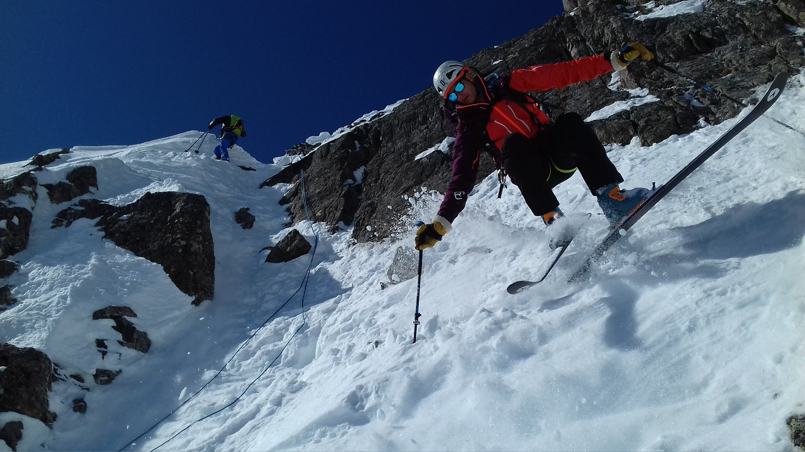

Carnet de Courses
- Grands Moulins Couloir Nord 5.1, Solo
- Grand Miceau Couloir Sud-Ouest 5.1, Hugo et Félix
- Grand Bagna Couloir Nord 5.1, Maelann et Félix
- Pic du Frêne Face Nord 5.1, Ben, Anne, Rémi, Hugo et Christophe
- Grand Crozet Face Nord 5.1, Idem, même journée
- Grand Charnier d'Allevard Face Nord 5.2, Rémi, Hugo, Noël et Félix
- Crête de la Marmottane Couloir Nord, 5.2, Solo
- Pointe Mathews Face Sud-Ouest 5.2, Ben
- Grande Casse Face Nord Centrale 5.2, Solo
- Pic de l'Étendard Écharpe Nord 5.4, Ben et Anne
- Albaron Face Nord-Est 5.1, El-manu
- Roche Faurio Col Nord 5.1, Hugo et Félix
- Grande Casse Couloir Nord-Ouest 5.2, Rémi
- Petit Armet Couloir Ouest 5.2, Seb Février 2018
- Crête du Mouchillon Couloir Oriental 5.3, Seb Février 2018
- Grand Armet Couloir en S 5.3, Max, Paul et Pierre Février 2018
- Trélod Face Est 5.4, Seb Février 2018
- Étale Face Nord-Ouest 5.4, Seb Février 2018
- Pic de la Grande Valloire Couloir Nord-Ouest 5.2, Pierre et Paul Mars 2018
- Pécloz Deprofundis 5.3, Seb et Max Mars 2018
- Petite Lance de Domène Face Nord 5.4, Seb, Paul et Hugo Avril 2018, puis avec Gaël Avril 2025
- Grand Pic de Belledonne Face Est 5.4, Paul Avril 2018
- Mont Pourri Face Sud Directe 5.4, Seb, Paul et El-manu Avril 2018
- Ailefroide Glacier Long 5.1, Hugo, Ben et Anne Avril 2018
- Mont Maudit Face Est 5.4, Seb Avril 2018
- Aiguille Blanche de Peuterey Face Est 5.4, Seb et Paul Mai 2018
- Trilogie du Pelvoux : Col Est, Col Ouest, Pente Centrale 5.4, Seb et Paul Mai 2018, Première pour l'enchainement et l'itinéraire du Col Ouest
- Pointe de l'Échelle Face Est 5.2, Paul Décembre 2018
- Rocher d'Arguille Couloir Sud-Ouest, 5.2 Seb Janvier 2019, avec Antoine Janvier 2024
- Blonnière Face Est La Gorge, 5.4 Paul Janvier 2019
- Revard Couloir du Téléphérique, 5.1 Seb et Paul Février 2019
- Dent de Rosanaz Face Nord, 5.2 Seb et Hugo Février 2019, Intégrale à ski en sautant les rappels
- Tournette Couloir Face Nord du Varo Rive Droite, 5.4 Paul Février 2019
- Bec d'Arguille [TOPO] Face Nord, 5.3 Paul et Ben Février 2019, Première, et 1ère répétition avec Antoine Janvier 2024
- Grand Bec Face Ouest Voie Gromier, 5.2 Hugo, Paul et Antoine Février 2019
- Pointe de la Vuzelle Face Nord, 5.4 Paul Février 2019, Première mais 100m sous le sommet
- Aiguille de Bérangère Face Nord-Ouest, 5.3 Paul et Max Mars 2019
- Grande Lance de Domène Faces Nord-Est et Nord-Ouest, 5.3 Seb Mars 2019
- Aiguille d'Arves Centrale Face Sud, 5.3 Paul Mars 2019
- Grande Casse Face Sud, 5.4(5.3) Seb, Lucas, Hugo Avril 2019
- Grand Pic de Belledonne [TOPO] Arête Nord-Est, 5.4 Paul, Max et Kévin Avril 2019, Première
- Pointe de Charbonnel [TOPO] Face Nord Voie du Sérac, 5.2 Paul, Max, Lucas et Ben Mai 2019, Première
- Aiguille de Bionassay Face Sud-Ouest, NON-SKIÉE Paul, Lucas et Seb Mai 2019
- Mont Blanc Face Ouest Couloir Saudan Intégral, 5.4 Antoine et Flo Juin 2019
- Aiguille d'Arves Septentrionale Couloir du Miaou Est, 5.1 Paul, Max, Maelann Décembre 2019
- Aiguille d'Arves Méridionale [TOPO] Rideau Est-Nord-Est, 5.4 Paul et Max Décembre 2019, Première
- Dent Parachée Face Est, 5.3 Paul et Gaël Décembre 2019
- Pic de Neige Cordier Couloir Est, 5.3 Paul, Hugo, Ben Janvier 2020
- Grand Pic de la Lauzière Face Est, 5.3 Seb et Maelann Janvier 2020
- Aiguille d'Arves Méridionale [TOPO] Face Est Gare à la Purge, 5.4 Antoine Février 2020, Première, et 1ère répétition avec Seb et Max Janvier 2023
- Tournette Face Nord du Varo enchaînement Voie Joss et Couloir Central, 5.4 & 5.3 Paul, Max et Antoine Février 2020
- Rocher Badon Arête Nord-Ouest, 5.3 Paul et Max Février 2020, Première
- Grand Bec Arête Ouest, 5.3 Lucas et Paul Mars 2020, Première
- Grande Glière Col Nord, 5.2 Seb Mars 2020
- Grand Paradis Face Est, 5.3 Seb et Max Juin 2020
- Mont Blanc Face Ouest Directe Beneditti, 5.3 Seb, Lucas, Max, Gaëtan Juin 2020
- Moulin Lambert Face Nord, 5.3 Paul et Ben Février 2021, Première
- Pic de la Grande Valloire [TOPO] Face Ouest, 5.3 Antoine et Kévin Février 2021, Première
- Petit Crozet Face Ouest, 5.1 Ben et Maëlann Février 2021, Première
- Pointe de Ronce Face Sud, 5.1 Solo Mars 2021
- Pointe des Bufettes Face Sud-Ouest, 5.3 Solo Mars 2021
- Dom Jean-Maurice Face Nord, 5.4 Max Avril 2021
- Pointe de Charbonnel Face Ouest, 5.2 Max et Lucas Avril 2021
- Frêne, Crozet, Miceau Trilogie du Bens, 5.2 Ben Avril 2021
- Pic du Montcalm Face Nord par les Tables, 5.1 Solo Mai 2022
- Mont Turia Épaule Nord-Est, 5.2 Pierre et Gaël Avril 2023
- Dôme des Nants Couloir Ouest-Nord-Ouest, 5.1 Pierre et Gaël Avril 2023
- Puy Gris [TOPO] Écharpe Nord, 5.4 Antoine Janvier 2024, Première
- Petit Badon (point 2639m) [TOPO] Face Nord Intégrale, 5.2 Gaël Février 2024, Première
- Galeteau Rampe Nord, 5.2 Gaël Mars 2024
- Pic du loup La Diagonale (intégrale à skis), 5.3 Gaël Mars 2024
- Bessanèse Couloir Nord-Ouest des Grandes Pareis, 5.3 Gaël Avril 2024, puis avec Gaël Antoine Seb et Max Mai 2024
- Aiguille du Plat de la Selle Face Ouest, 5.3 Solo Avril 2024
- Tête Nord de la Pointe de Charbonnel Face Nord-Est, 5.3 Seb, Gaël, Max, Antoine Mai 2024
- Pointe Nérot Brèche Est, 5.3 Gaël, Antoine, Mathis Mai 2024
- Enchainement Col du Diable & Col de l'Ange 5.4 Gaël et Antoine Mai 2024
- Mont Turia Directe Nord-Est 5.4 Antoine Juin 2024
- Grande Casse Petite Face Nord 5.1 Antoine et Julien Juin 2024
- Pointes du Mouchillon Couloir Nord-Est branches de gauche & droite 5.1/5.2 Max Janvier 2025
- Intégrale de Crop Rocher de l'Homme face Nord 5.1 - Pic de la Pierre couloir Nord 4.3 - Grand Replomb face Nord-Est 4.2 - Montagne du Barlet couloir en S 5.1 Gaël et Antoine Février 2025
- Grand Pic de Belledonne Traversée 3 Pics (AD+) Hugo Juin 2017
- Grande Tête de l'Obiou Face Nord-Ouest (PD+) Solo Juillet 2017
- Grande Tête de l'Obiou Voie Paul Arthaud + Feuillets (AD-) Solo Juillet 2017
- Grande Glière Éperon Nord-nord-est (AD+) Hugo Juin 2018
- Traversée Toit-Pyramide (D) Hugo, Paul, Noël Juillet 2018
- Grand Pic de Belledonne Arête du Doigt et Traversée (D-) Paul Juillet 2018
- Grand Bec d'Étache Pilier du Levant (D+) Benoit Juillet 2018
- Pointe d'Amont Arête Nord (D) Hugo et Noël Août 2018
- Tête du Rouget Pilier Chèze (D-) Hugo et Noël Août 2018
- Roche de la Muzelle Couloir Durdan (D) Solo Mai 2020, 6h20 parking-sommet
- Mont Blanc Traversée par Bionassay (AD) Benoit Juillet 2020, à la journée 11h15 d'ascension, 17h50 total
- Barre des Écrins Voie Gaspard face Sud (AD+) Benoit Juillet 2020, à la journée parking-rimaye 3h30, parking-sommet 8h20
- Rocher Badon Arête Nord-Ouest (AD) Benoit Juillet 2021
- Grand Pic de Belledonne Face Nord Voie Rébuffat + Traversée (TD/P3) Benoit et Yann Juin 2023
- La Bessanese Éperon Murari (AD+) Nico Juillet 2024
- Pointe Mezzeline Arête du Mulinet (AD+) Nico Juillet 2024
- Intégrale d'Argentière Traversée Petites Aiguilles + Orientale & Occidentale des Grandes (AD+) Hugo et Loan (qui bâche au col Dulong de Rosnay) Juillet 2024
- Rocher d'Arguille Arête Ouest, conditions mixtes (AD) Solo Octobre 2024
- Aiguille Capdepon Extatique (D+/P1+) Hugo Juillet 2018
- Rang des Agnelons KingKong (TD-/P1) Hugo et Noël Août 2018
- Rocher de l'Ours Nounours (D+/P1) Hugo et Noël Août 2018
- Aiguille de la Combe Les visiteurs du soir (TD/P1) Hugo, Benoit, Mamé Août 2018
- Aiguille des Chamois Pilier des 7 lacs (TD/P2) Hugo et Noël Juillet 2019
- Pointe Centrale Nord du Ferouillet Les amis du Ferouillet (TD/P2+) Hugo, Paul, Noël Juillet 2019
- Grand Argentier Monte à bord (D/P2) Océ Août 2020
- Grand Châtelard Tirlipompon (D-/P1+) Océ Août 2020
- Contrefort de la Madelon La boîte de Pandore (TD-/P1) Océ et Zoé Août 2022
- Pic de la Madelon La Pujos (D+/P2) Benjamin Août 2022
- Pic de les Valletes Grand dièdre (D/P3) Benjamin Août 2022
- Le Galeteau Classique Tobey (AD+) Solo intégral Juillet 2024
- Aiguille de la Combe Déboires et Convictions (D+/P1) Loan Juillet 2024
- Crête des Îlettes La Ligne Verte (AD+) Solo intégral Octobre 2024
- Belledonne Chamrousse-Collet Par les hauts cols ~70k 7000d+, ~24h Solo Juillet 2016, puis dans le sens inverse avec Nico R. 2017
- Tour horaire du Thabor depuis le Lavoir 50k 5600d+, perdu le chrono, dans la journée Solo Juillet 2017, puis antihoraire depuis plan lachat Juillet 2018
- Corse GR20 177k 11800d+, 91h Solo Juillet 2017
- Belledonne l'Échappée Belle Intégrale (dossard) 144k 14000d+ Solo Abandon 118k Août 2017, Finisher en 46h Août 2018
- Mont Blanc Voie Normale Française à la journée, 7h10 ascension, 12h47 total Nico et Gaël Juillet 2024
- Grand Paradis Aller-retour depuis Val d'Isère, 70k 4800d+, 17h45 Benoit et Yann Juillet 2024
- Chambéry-Arles Par la via-rhona à partir de la Balme, 520k 1500d+ 21h compteur 30h total Solo Juillet 2020
- Grande Traversée du Jura (route) 318k 4880d+ 15h43 compteur 21h36 total Solo Juillet 2021
- Tour de la Creuse 270k 3500d+ 10h Solo Juillet 2022
- Poule de Savoie par Roselend et Iseran, 250k 4400d+ 11h02 compteur 13h56 total Max, Lucas, Pauline Septembre 2023
- Grand Colombier, niveau Grand Maître 4 montées du Colombier + 1 montée du col de la Biche (versant Valromey), 143k 5350d+ 8h15 Solo Octobre 2023
- Tour de Belledonne Grand Cucheron, Glandon, Luitel, et les balcons jusqu'au Barioz, 246k 5400d+ 10h30/13h07 (pause réparation) Antoine Août 2024
- La noix de Janot Revard, Montée de La Roche, Col de l'Épine, Belvédère de l'Écolu, Col des Égaux, Col du Granier par Pierre Grosse, St-Marie-du-Mont, Allevard, Col de Champlaurent, Col du Frêne, Col des Prés, 274k 7000d+ 13h11/15h03 Antoine Août 2024
- Isère & Rhones Loop Pontcharra, Grenoble, Romans-sur-Isère, (/via rhona) Lyon, Chanaz (\via rhona), Pontcharra, 502k 1700d+ 18h51/21h32 Solo Septembre 2024
- Pic de l'Étendard Approche-retour en vélo depuis Chambéry, total 219k 3700d+, 15h22 Solo Juillet 2020
- Grand Pic de Belledonne Traversée 3 Pics (AD+), Approche-retour en vélo depuis Chambéry, total 125k 3350d+, 9h30 Solo Juillet 2023
Ski de montagne
Alpinisme
Escalade
Trail
Vélo
Combo



Near-Death-Experience pour Max, et moi-même en photographe, sur l'Arête Nord-Est du Grand Pic de Belledonne